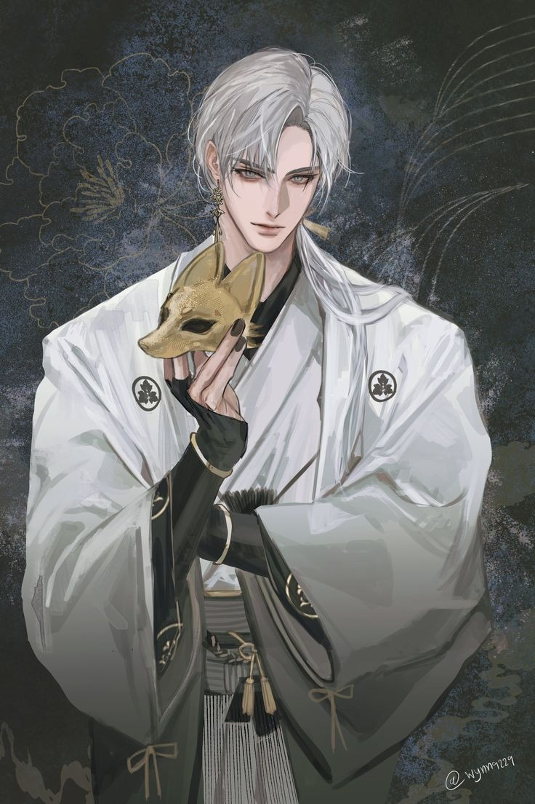

| Hayato Amagiri | the Keeper of the Roads · Amagiri, the indigo line of the Moto · as of the morning of the seven lines in the Hall of Verdicts, standing at the indigo chair in his uncle’s place |
| Epithet | The Keeper of the Roads, in the Hall. The Stark riders call him Two Days and a Road and mean it kindly, the older lords call him Byakuya-dono’s shadow, and the Keld who lived through the Skeldmere call him a squall. None of them has the size of him right |
| Concept | Every road he has ever walked is his, and he decides where it goes. |
| Stat line | Stage IV Flourishing · Adept (Clouded), as the Hall reads him Level 95 · State not known · unclassed Path not known, unread below Glory · Lenses: not known |
| Combat grammar | Blade, the Amagiri draw: one cut, from a sword he carries for show, drawn once in front of witnesses, at the Skeldmere, and nobody there understood what they saw |
| Aura and sound | a thin blue-gray haze, the color of rain coming off a lake at dusk, that thickens round him at night on a road and thins to nothing in a hall · sound: rain on a cape |
| How he moves | He does not cross ground he owns; he arrives on it. |
| Stack | not known · layers: RAIN MIST, always on a road |
| Bonded weapon | the plain sword, which is not plain |
| Kit | an indigo rain-cape with a sprig of juniper in the toggle over a white haori fading to mist-gray and a striped hakama, gold at the ear and wrists, no armor worth the name, a sword he holds like a man who carries it for show, and the piece people talk about first: a gilt fox mask, Very Rare, which the whole Hall takes for a nervous young lord’s fidget |
| Voice | ”Two days and a road, sire. Always. Whatever you need.” · speaker type: a hereditary road-surveyor and quartermaster who talks in distances, mule-loads and chimney counts, and apologises before he tells a king anything |
I. Identity
| Field | Value |
|---|---|
| Full Name | Hayato Amagiri |
| Pronunciation | HAH-yah-toh ah-mah-GEE-ree |
| Alias / Title | Lord Hayato · the lord of the Amagiri in the indigo chair · the one who keeps the roads |
Also Known As
| Name | Who says it |
|---|---|
| Amagiri, bare | older lords who want him to remember he is the youngest of them |
| Byakuya-dono’s shadow | the Hall, behind his back |
| a thin quick child with ink on his fingers who drew maps of the hall’s corridors on the backs of the menus | Naiser Yukari, who remembers him from before Hiroe |
| what walks the roads at night | the old Amagiri prayer at the crossroads shrines, which is about him and does not know it |
| Field | Value |
|---|---|
| Race / Lineage | Human. Amagiri, the indigo line of the Moto, whose old office is route-reading; the name means rain-mist, and the house’s roads go where the mist goes. His colors are indigo and mist-gray, deep as a lake at dusk; the line’s beast, carved on the old waystones, is the Moth |
| Age | Forty-three |
| Realm / Faction | The Amagiri and the north, sworn to Muken Moto of the Indigo Mist Line; the indigo chair of the Hall of Verdicts, in his uncle’s place |
| School and sect rank | His grandfather’s survey of the northern villages, learned by heart; a year of riding the passes alone, at night, through every high place in the north where a current pools; the Amagiri draw, which his grandfather taught him in a barn with the doors shut and told him never to use where anyone could count · lord of the indigo line in the chair; the land is his uncle’s, and his uncle is in a room in the Tenrai keep with a Stark rider at the door |
Renown
| Among | What they say of him |
|---|---|
| the public | the man who brought the Ashmore horse to the Skeldmere in two days with twenty riders and a map |
| the army | the Starks call him Lord Hayato and mean it, and laugh at how he rides |
| the sects | the seven lines thought him a quiet young man who would vote as he was told, and he did, once |
| the guilds | Ilse Hallenfeld likes him, which is rare |
| Field | Value |
|---|---|
| Epithet | the Keeper of the Roads, in the Hall; “two days and a road” follows him |
| Catalyst Event | The Verdict of Six, where he voted yes on Torvald Stark’s head with shame on his face, and went home and began to map the roads out |
| Refusal | He will not promise what he cannot deliver; he says exactly what his roads and his twenty riders are worth and not one mule more, and he has never once counted himself in the twenty |
| Conviction | A road carries whatever is put on it, and the man who keeps it answers for who is standing at the far end when the carts arrive. He learned it late, at the Yukari’s table |
| Arc kind | Positive: a young man getting ready to run who found out which way |
II. Soul Architecture
| Field | Value |
|---|---|
| Level | 95 |
| Temperance Stage | IV, Flourishing · Adept |
| Path | not known |
| Mastery | unread below Glory, as the Hall has him |
| Yield (η) | not known |
| Soul Crystal | Clouded, as the Hall reads his Stage |
| Crystal State | not known |
| Class | unclassed, as the Hall has him |
III. Wellspring Harmonizations
| Wellspring | Folk name | Kind | Depth | What it bends in him | Note |
|---|---|---|---|---|---|
| Phreatis | the Waters of Memory | Medium | governing | what flows remembers the shape of what it flowed through, and so does he | every road he has walked, every ford, every herders’ shoulder, is in him the way a riverbed is in the river, and what he does goes the way water and mist find the low road round a hill |
| Transference | the Give-and-Take | Fate | deep | the current that carries a thing from one position to another | on a road he has walked, the distance between its ends answers to him |
IV–VII. Stats, Force of Hand and Aether Flow
The rest of the sheet is not known.
VIII. Traits
Full accounts: Hayato Amagiri — Abilities
| Trait | Kind | Source | Path and Form | Gates | What it does | Limit | Tell | Cost | Counter | Numbers |
|---|---|---|---|---|---|---|---|---|---|---|
| THE ROAD UNDER THE ROAD | Primary | — | Path Spirit for the read and the keeping, with the Walked Fate Path’s share for the road that answers · Lens Phreatis, with Transference · Form Read | none on the card | He reads ground for the way through it before he reads anything else, and he keeps every yard of it for good; on a road he has walked he can be anywhere along it | It reads only ground he has ridden or walked, never a map, however much he trusts it; and it reads ground, not men; he can bring twenty riders to any door in the north and has no idea what will be waiting behind it. In the Wellspring’s own terms, Transference pools on well-traveled roads and thins to nothing on unmapped ground. | The finger: it draws roads on tables, in wet rings, in the air. · his finger drawing a line on the nearest table | Nothing to read, and he cannot stop doing it. | Country he has never walked, and a road changed since he last walked it. · ground he has never walked | — |
| RAIN MIST · 雨霧 Amagiri | Inherited | — | Path Spirit, the mist laid over what he is and over those riding with him · Lens the Amagiri blood’s inheritance, no Wellspring · Form Write | none on the card | At night, in the wet, he and everyone riding with him look like weather | It hides from eyes and readings and only from them, and best on the move, in the dark or the wet; in a hall, in daylight, standing still, it thins to almost nothing. It is mist, and mist is water hung in cold air: heat burns it off the ground the way the sun burns fog off a valley. It will not hold within ten yards of a fighter who walks in furnace heat; there it boils away round him in white rags and leaves him standing in the open like a man caught on a hillside when the mist lifts. | To anyone who knows to look, a patch of road where the mist is thicker than the weather explains. · his party goes gray and hard to fix in the eye at night | About two per cent of his reserve an hour on the move, less than he recovers. | Daylight, dogs that smell what they cannot see, a lantern on a pole, and heat. · daylight, dogs, a lantern on a pole, and heat | — |
| NOW I KNOW WHICH WAY | Secondary | — | Path Fate, Walked: his own share, spent the way a kept word is · no lens · Form Bind | none on the card | Once he has picked his road his hands may shake, and his feet do not stop | The choosing; until he has picked his road he is the most hesitant man in any room, glancing at the door. | His restless fingers going still. · his restless fingers go still | Nothing to choose and everything to keep. | Put two roads in front of him at once. | — |
IX. Skills and Abilities
Full accounts: Hayato Amagiri — Abilities
Skills
| Skill | Cues / mechanics | Learned where | Priced by (Sub-Stats) | Mark | Rank |
|---|---|---|---|---|---|
| Route-reading | passes, fords, herders’ shoulders, deer tracks; mule loads in snow; time to a door | his grandfather’s survey and a year riding alone | Retention, Forecast | Mastered | Master |
| Village survey | chimneys with smoke, souls on the register, the difference between them | his grandfather’s ledgers | Retention, Analysis | Mastered | Master |
| Letter-reading | two seals and which goes on the left; what a letter’s road says about its sender | his own roads, and a man of his who is very good with wax | Analysis, Acuity | Drilled | Expert |
| Mapmaking | Tenrai roads in black, his in indigo | the backs of menus, then everything | Retention, Finesse | Mastered | Master |
| Riding | too far forward, all elbows, on a horse too small for him, and always arrives | the passes | Economy | Held | Expert |
| The Amagiri draw | one cut, flat, the whole arm; nothing else | a barn with the doors shut, his grandfather | Alacrity, Finesse | Mastered | Adept |
| Swordwork, otherwise | holds it like a man who carries it for show, because for everything but the draw he does | the Amagiri yard, under protest | Penetration | Held | Adept |
Techniques
| Technique | Kind | Mark | Source | Path and Form | Gates | What it does | Limit | Tell | Cost | Counter | Numbers |
|---|---|---|---|---|---|---|---|---|---|---|---|
| THE INDIGO ROADS | Signature Art | — | — | — | — | Every road he has ever walked is his, and he decides where it goes | — | — | His power is only as wide as his feet have made it. | Fight him on ground he has never walked, bring heat or a hard dry wind, go round the ends of the line, or send what crosses without traveling. | Sound: a whisper of steel for Michi-kiri, the draw · a light brushing step along his own road |
| AMAGIRI-ASHI · 雨霧足 | Bloodline Art, Amagiri | Mastered | Inherited | Path Spirit, with the Walked Fate Path’s share for the road that carries · Lens the Amagiri blood for the mist, Transference for the carrying, Phreatis for the road known · Form Write | none on the card | (雨霧足 · the Rain-Mist Step). He goes to cold fog and runs the road like fog down a river valley, with whoever he is carrying, and comes back together at the far end apologizing. | The mist’s: it needs a road he knows, it needs air that will hold water, and it will not hold in heat, in a hard dry wind, or in strong sunlight, which burn it off the ground and leave him standing where the mist ran out. | A little more gray at the edges of him than the weather explains. · he is a little grayer at the edges than the weather explains | About a fifth of a per cent of his reserve a league, which is why he can cross the north in a night and does not, since a quartermaster who arrives before his message raises questions. | Heat, wind, daylight and strange ground. · heat, wind, ground he has not walked | — |
| THE ROAD’S OPEN | Technique | Held | Lived | Path Spirit, with the Walked Fate Path’s share · Lens the Amagiri blood, Transference and Phreatis, as the Step · Form Write | none on the card | He stands at a bend with his left hand out behind him and holds the way back open like a door, for as long as the mist will stand. | The mist’s and the road’s: it stands only at the edge of where fog will hold, and only on a road he still has. | The hand. · his left hand held out behind him, palm open, and fog standing at one bend of a road | The Step’s price for the stretch he is holding, paid again every minute it stands, and his feet, because the open end is wherever he is and he cannot leave it. | Burn the mist off that bend, or move him off it. | — |
| MICHI-KIRI · 道切り | Signature Technique | Mastered | Taught | Path Fate, Walked: a claim along one line, carried on a Studied Body’s single stroke · Lens Transference · Form Claim | none on the card | (道切り · the Road-Cut). One flat cut across the air, and the road is closed along that line: a charge, an arrow or a running man arrives at it and goes no further. It strikes nothing. | It closes only what travels: heat, light and sound do not travel along a road in the way he means and cross the cut untouched, so a furnace stopped a hand’s width from a shield still blisters the man behind it; a man standing still on the line is not moved off it, and the line is as long as one cut of a slight man’s arm and the reach of his Radius, never a wall round a city. | The sword out. | About five per cent of his reserve to draw; it holds a minute from the draw. | Go round its ends, or bring something that crosses without traveling. A fighter stopped by it can walk along the closed road with his fist against it, feeling for the end the way a man feels along a fence for the gate, toward the slight man standing at it. · what crosses without traveling, heat and light and sound | not known |
| SHINGAN, turned on the ground · 心眼 | Bloodline Faculty, Moto | Mastered | Inherited | The common Moto heart-eye · no lens · Form Read | it spends his own share and pulls nothing down | (心眼 · the heart-eye), turned on the ground. He sees where a slope, a ford or a wall will bear a horse and where it will give. | It resolves load in ground and stone; it reads men poorly, and the Torvald he read at the Verdict of Six he read with the other five. | his eyes on a wall’s mended seam before the people in front of it | Paid as a squint that never quite leaves the corners of his eyes. | Soft ground with nothing in it carrying weight: bog, deep snow, open water. | — |
Vows
| Vow | Sworn to or before | Binds and lifts | Stands |
|---|---|---|---|
| of the Indigo Mist Line | Muken, at the woodpile | his twenty riders and every road north of the Seat that the Tenrai do not know is a road | — |
| two days and a road, always, whatever the king needs | the ratification | — | — |
| Yukari counters at both ends of every grain-train on his roads | the Yukari | — | — |
Releases
Not known.
X. Spirit Axes
| Person | Bond | Axis weight | What flows across it |
|---|---|---|---|
| Kiyome Byakuya | the lady he follows, a few years older | Axis 20 | she looks and he stops talking; he looks at her before he says anything that matters, and she nods for him to go on |
| Muken Moto | his king | Axis 15 | built on a woodpile oath and a road; the first time he said sire he noticed, and let it stand |
| Tetsugen Akagane | — | Axis 10 | who laughed in the white house when Hayato told them, and then poured him another cup |
XI. Resistances
| Against | Resistance | Carried by |
|---|---|---|
| Being seen or read | near-immune on a road at night | RAIN MIST |
| Cold and wet | strong | Tolerance 260 |
| Mind-work and soul-work | fair | Ward 215 |
| Anything physical | very poor; he is slight, and knows it | — |
| Heat | his worst ground; it burns the mist and the roads off the earth | — |
XII. Physical Description
| Feature | Description |
|---|---|
| Build and skin | He is a slight, sharp man, lean the way men get who live in the saddle, and pale, very pale, the pallor of someone who rides at night and sleeps by day. |
| Hair | His hair is silver-white, cut to a soft fall over the brow and swept to one side, with the back grown long into a single tail he ties with a short gold cord and wears forward over his right shoulder. |
| Face and eyes | His face is narrow and fine-boned, with a long nose, level dark brows and gray eyes that hold a horseman’s squint at the corners even indoors, and a mouth that rests a little crooked, as if he has just thought of something dry and decided not to say it. |
| Ornaments | A long gold earring hangs from his right ear, a dangle of small gold pieces that moves when he turns his head; he paints his nails black, and wears a black fingerless glove on his right hand with thin gold bangles at both wrists. |
| Hands | His fingers never stop: folding the corner of his cape, turning his tea cup a quarter so the glaze crack faces away from him, drawing roads on the table. |
| Hall dress | At the Hall he wears a white haori with the Amagiri mon worked on its breast and sleeves, over under-robes of indigo so dark it reads black, their sleeves banded in gold, a gray striped hakama, gold-tasselled cords at the waist, and a folded fan tucked into his collar; and he carries a gilt fox mask, the mask the Amagiri used to leave at crossroads shrines for whatever walks the roads at night, which he turns in his hand and almost never puts on. |
| Road dress | On the road all of that goes under an indigo rain-cape, dark at the shoulders where the snowmelt soaks through, with a sprig of blue-black juniper caught in the toggle at his throat; it has been there since the Yukari enclave, and he has not taken it out. |
XIII. Psychology
| Field | Value |
|---|---|
| Core Wound | He voted for Torvald Stark’s head because he was frightened, and he knows exactly how frightened he was |
| Flaw | Until he has chosen, he hesitates, and looks at the door |
| Desire | Grain at the far end of his roads, and someone at the far end worth carrying it to |
| Strength | He says exactly what he can deliver, and then delivers it in half the time |
| Loop | hesitate, count, choose, ride |
| Foil | Tetsugen Akagane, a generation older, who follows and will not obey; Hayato obeys, and only lately learned to follow |
| Stress Default | faster, the words tumbling over each other as if slowing down would lose him the end of it |
Voice block
| Field | Value |
|---|---|
| Speaker type | a hereditary road-surveyor and quartermaster, talking in distances |
| Chant tongue | northern Common |
| Lying tell | he turns his cup a quarter so the glaze crack faces away from him |
| Notices first | the way out of a room, then the seam in its wall |
| Sentence length | short and concrete, built of numbers and place names, then lists |
| Contractions | sometimes, northern: “I’ll not pretend” |
| Pet phrase | ”Two days and a road” |
| Never says | a number he has not counted himself, or his own Stage |
| Stumbles | when he is frightened; never when he is giving a distance |
| Stress shift | faster, and the fingers go |
| Grief shift | he carries the stone himself |
| Joy shift | he begins, very slowly, to smile |
| How modern | plain and courteous; “Byakuya-dono,” “Lord Naiser,” “sire”; dry, never crude |
| Sample line | ”Two days and a road, sire. Always. Whatever you need.” |
XIV. Equipment
| Item | What it is | Grade | Rarity | Rung | Bonded |
|---|---|---|---|---|---|
| The sword | plain to look at, an unsigned Amagiri house blade | D | Rare | Linepiece | yes |
| The fox mask | gilt, a crossroads-shrine mask | SS | Very Rare | Kingsarm | no |
| The fan | folded, lacquered | — | Uncommon | — | — |
| The rain-cape | indigo wool, with the juniper in the toggle | — | Uncommon | — | — |
| His grandfather’s survey | ledgers of every northern village, souls and chimneys | — | Rare | — | — |
| The white haori | white silk haori shading down through mist-gray to storm at the hem | — | Rare | — | — |
| The gold | earring, bangles, hair cord, glove, nail paint | — | Uncommon | — | — |
| The traveling coat and the plain cloak | a blue-gray traveling coat; a plain cloak | — | Common | — | — |
| The horse and its harness | a shaggy dun hill pony on plain leather and a wooden saddle-tree | — | Common | — | — |
| The map in black and indigo | the Tenrai roads in black, his own in indigo | — | Rare | — | — |
| Item | What it is | Item Tier | Look | Maker’s mark | Wear and repairs | Shown off | Past owners | What people say | Price | Other |
|---|---|---|---|---|---|---|---|---|---|---|
| The sword | plain to look at, drawn once before witnesses at the Skeldmere | Item Tier Proofed on its face; carrying the Road-Cut, which no assessor has tested | an unsigned Amagiri house blade of no particular year in a plain black scabbard, an indigo cord grip rewound over the mark, gold nowhere | proof-mark the Amagiri road-mark, under the grip wrapping | — | all elbows, on a horse, in front of six hundred Ashmore lances | — | Stark riders bet on whether he could hit a barn with it; the Keld who lived say it was a squall | a smith would ask about five gold, and tell you it was too much | about a kilogram, a long arm’s length, balanced a hand above the guard · on its edge it beats mail and fails against Tempered plate; the draw beats no armor at all, because it strikes nothing · bonded gear grows, and it has grown only where no coil looks |
| The fox mask | — | Item Tier Found | old pine and gesso under gold leaf, rubbed through to red clay at the ears and muzzle by his own fingers; narrow eyes, smiling | — | — | he turns it over and over in his hand in front of six lords, and has never been asked to stop | one of the masks the Amagiri left at the crossroads for what walks the roads at night, and past owners are the problem: it was left, and it came back, and his grandfather never said how | old women at the crossroads shrines make the sign when he rides past with it on his saddle; the seven lines say Amagiri’s boy has a toy | — | RAIN MIST lies on what he holds, and the one Hall assessor who has looked put it down as gilt pine, plain, three silver |
| The fan | — | plain | black lacquer sticks with a black leaf, carried in the collar | — | — | — | — | — | — | he has never opened it in the Hall, because the leaf is every corridor of the Hall in fine indigo, drawn from memory when he was eleven |
| The rain-cape | — | plain | vat-dyed so deep it comes off on his neck, oiled and re-oiled, dark at the shoulders whenever there is snow; one corner worn pale where his fingers fold it; a horn toggle, and the juniper from the Yukari enclave gone dry and blue-black | — | — | streaming, at the front of the Ashmore horse, the one thing on that field that everybody could find | — | he does not take it off indoors until someone tells him he may | — | — |
| His grandfather’s survey | — | plain · he no longer needs to open them | nine fat books in gray buckram, the old man’s chimney counts in brown ink and Hayato’s corrections in indigo beneath them, worse every year | — | — | — | — | — | — | — |
| The white haori | white silk haori shading down through mist-gray to storm at the hem, the Amagiri mon on breast and sleeves in a black ring, over under-robes of indigo so dark it reads black, their sleeves banded in gold; a gray striped hakama, gold-tasseled cords at the waist, gold cord ties at the hem | plain | the shading is clamp-resist work done by the Amagiri dyers in the wet hills, and each one takes a season; it is the line’s mist at its lightest, and a quilted indigo arming-vest is all that goes under it, the Moto robe-over-harness reduced to a courtesy, so that an Amagiri in full dress looks ready to leave | — | a scuff low on the left sleeve he keeps meaning to have seen to | he doesn’t think he does, and then he stands up | — | white on an indigo lord gets him called Byakuya-dono’s shadow behind his back, and he has let them | — | — |
| The gold | a long earring of small gold pieces, thin bangles at both wrists, a short gold cord in the tail of his hair, a black fingerless glove on the right hand, black paint on his nails | plain | portable wealth, as a landless line wears it | — | — | the earring moves when he turns his head toward the door, which he does a lot | — | — | — | the earring’s pieces are little gold waystones, one for each high pass he thinks of as his, and nobody has counted them · the paint and the glove look like vanity; there has been ink on those fingers since he was six, and it does not come off |
| The traveling coat and the plain cloak | a blue-gray traveling coat with the indigo of the line showing only at the cuffs; a plain cloak for going to a garden gate at night | plain | — | — | the cuffs are chalky with road dust and finger-marks, and the coat is what he wears when he is not being looked at, which is what he prefers | — | — | — | — | — |
| The horse and its harness | a shaggy dun hill pony, too small for the company it keeps, on plain leather and a wooden saddle-tree | plain | — | — | — | — | — | — | — | he rides too far forward and it has borne this for years; he calls it Mule |
| The map in black and indigo | the Tenrai roads in black, his own in indigo, more indigo than black | plain | one long sheet of good rag paper, soft at the folds | — | — | — | — | — | — | Edric Ashmore looked at it for as long as it took a steward to bring wine and carry it away, and then rode; it has no copy, and it does not need one |
XV. Temperance Record
Level log
| Levels | Where they were earned |
|---|---|
| 1 to 95 | the Amagiri house and its roads, and the barn |
| what the Hall has entered | Level 95 |
| Field | Value |
|---|---|
| Stage ledger, shown | Stage IV, Flourishing |
XVI. Fracture Log
| Event | Layer | Status | What it left |
|---|---|---|---|
| The Verdict of Six | Attraction | processed | NOW I KNOW WHICH WAY |
| Field | Value |
|---|---|
| Note | --- |
Lore
Full account: Hayato Amagiri — Lore
Ties
| Person | Who they are to him |
|---|---|
| Muken Moto | his king. |
| Kiyome Byakuya | whose road he chose. |
| Tetsugen Akagane | who came with him by night to the white house. |
| His uncle | lord of the Amagiri land, who sat at Kagenori’s left hand, ran, and is held. |
| Naiser Yukari | who remembered him. |
| Naevra Yukari | who counts his carts as well as the graves. |
| Edric Ashmore | sworn to him at the junction stone, still faintly amazed at himself. |
| Torvald Stark | whose head he voted for. |
| Ilse Hallenfeld | whom he asked why she writes the record herself. |
| Shiro Tenrai | whom he found in the keep. |